The login code now goes by SMS first. WhatsApp is the second way, offered on the number screen and again on every resend, in either direction. This page covers what the keyboard does, how the code fills itself in, the back key, and every switch between SMS and WhatsApp. Open the links on a phone or in a narrow window.
The prototype draws an iPhone keyboard inside the screen and plays the message arriving, so it behaves the same on a laptop. A computer keyboard works too: digits, Backspace and paste.
The number screen with Skip. Tap the field: the keyboard comes up with both buttons still in view, and the phone's own number is offered above the keys.
Lands on the code screen. The SMS arrives two seconds later and its code shows above the keyboard. One tap fills all six boxes.
The WhatsApp message has a Copy code button. After copying, the code is offered as Paste above the keyboard.
The countdown is already over, so both ways are awake. Send on either one, as many times as the limit allows. Open the WhatsApp version to switch the other way.
A note under the boxes, and SMS wakes up at once without waiting for the countdown.
On any code screen, type six digits that aren't the code. Do it five times to see the lock.
The number pad, not the full keyboard. The screen moves up so the field, Send OTP (SMS) and Get OTP on WhatsApp all sit right above the keys. The logo shrinks; nothing ends up behind the keyboard. Tapping anywhere outside the field puts the keyboard away.
The keyboard offers the number saved on the phone. iPhone: the field is marked as a phone number, so iOS suggests it from My Card. Android: the Phone Number Hint prompt from Google.
+91 99710 19664, 099710 19664 and 99710-19664 all land as 9971019664. Spaces, dashes, the country code and a leading 0 are dropped.
Both buttons stay dimmed until all 10 digits are in. Then the field turns green with a tick. SMS is the filled pink button, WhatsApp the outlined one under it.
The tapped button shows a loader (Sending OTP... or Sending on WhatsApp...) and both buttons lock, so a code can't be asked for twice. Then the code screen.
Skip shows only on the very first screen of the app. From the trip wizard, a lead form or Account, logging in is the point, so there is no Skip.
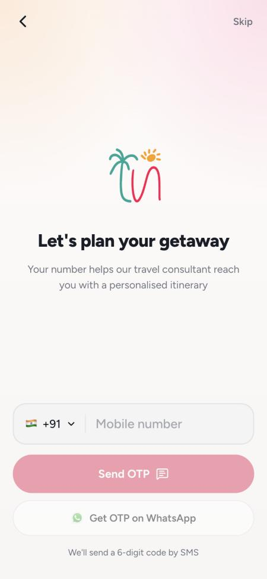
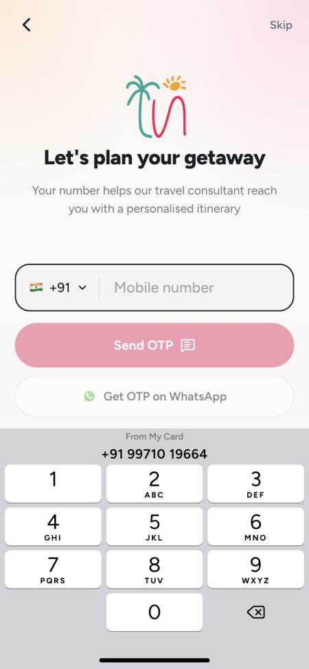
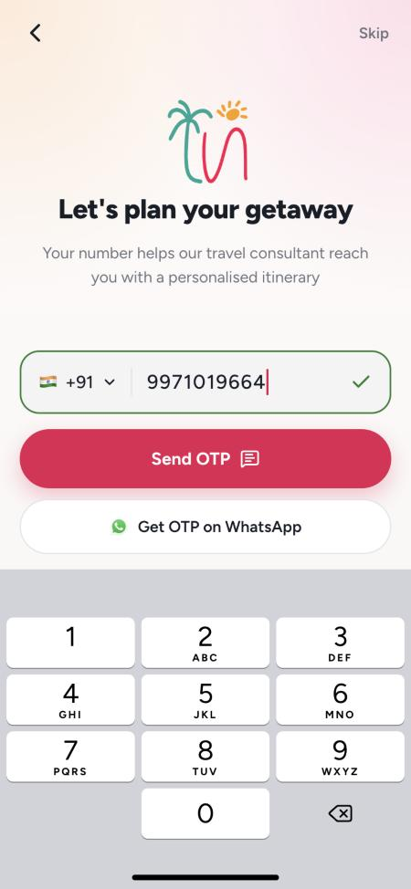
The first box is ready, no tap needed. Above the keys, in this order: Verify your number, which way the code went and to which number, the six boxes, the countdown and both resend options.
When the SMS lands, its code shows above the keyboard (From Messages on iPhone). One tap fills all six boxes together and checks the code. There is no Verify button. iPhone: the boxes are marked as a one-time code. Android: the SMS Retriever API fills it with no tap at all, or the SMS User Consent prompt with one tap.
Each digit moves the cursor to the next box. The sixth digit checks the code straight away.
Each press of back clears the last filled digit and the cursor steps back with it, right to left. Holding it down clears them one after another. One press never clears everything, and never jumps over a box.
Tapping any box puts the cursor on the first empty one (the last box if all are full), so a code can never have holes in it.
A 6-digit code pasted into any box fills all six and checks it. Anything that isn't a digit is dropped.
Verifying... shows under the boxes and the keyboard input is ignored until the answer is back. On success the keyboard goes down.
The back arrow returns to the number screen with the number still in the field, ready to correct.
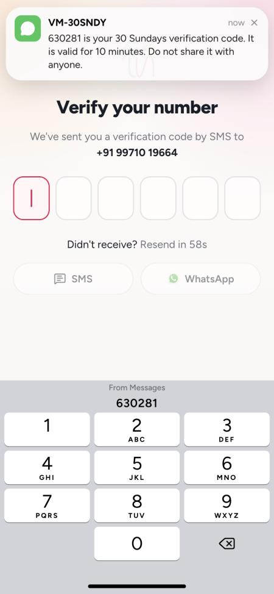
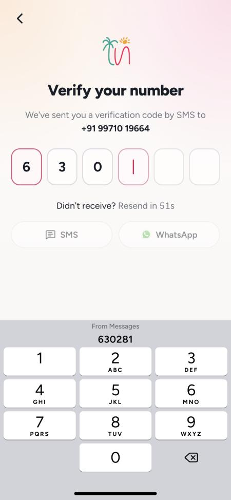
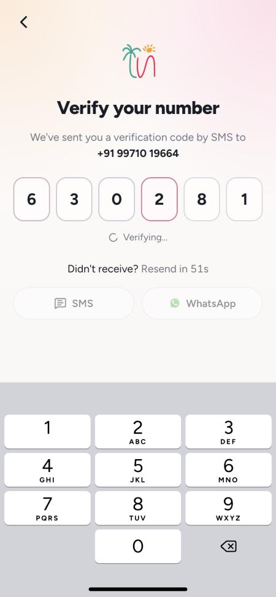
Sent as a WhatsApp authentication message with a Copy code button. On Android it can also carry a one-tap Autofill button that opens the app with the code already in.
The iPhone keyboard can't read WhatsApp. After Copy code, the code is offered as Paste above the keyboard, and one tap fills all six boxes. The app should not read the clipboard by itself, since iOS asks for permission every time.
Autofill in the WhatsApp message brings the person back with the code filled in and checked. Copy and paste works as a fallback.
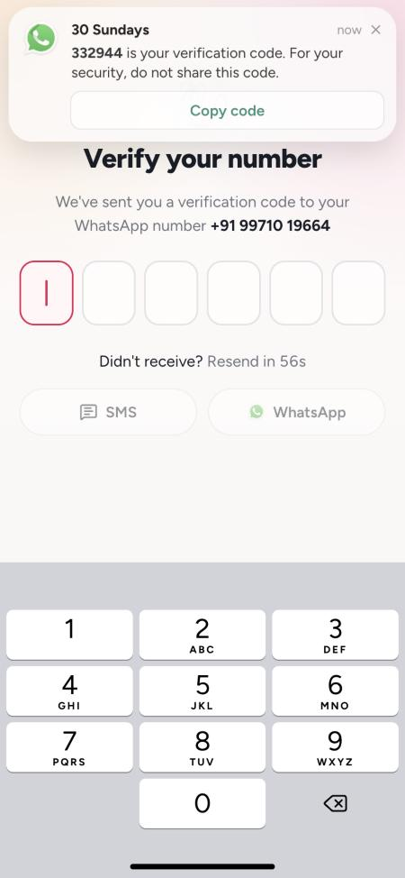
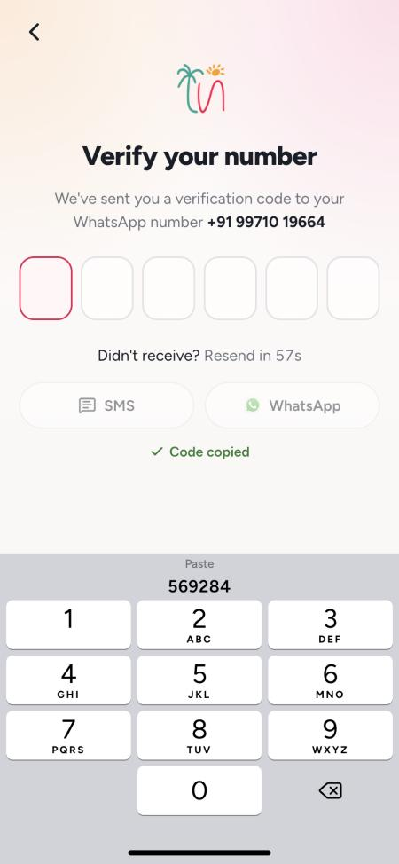
SMS and WhatsApp are both on the code screen from the first second, dimmed under a 60 second countdown, so nobody waits a minute to find out WhatsApp was an option. At zero the line reads Get a new code on, and both wake up.
SMS then SMS, SMS then WhatsApp, WhatsApp then WhatsApp, WhatsApp then SMS. Each time: a new code goes out, the boxes clear, the keyboard stays up, the line under the title changes to the new way, a green note confirms it (New code sent on WhatsApp), and the countdown starts again from 60.
An SMS that turns up after the person switched to WhatsApp still gets them in. Every code sent in the last 10 minutes works, until one is used. In the prototype the earlier SMS code stays offered above the keyboard after the switch.
If WhatsApp reports the message can't be delivered (the number isn't on WhatsApp), show within about 10 seconds: We couldn't reach this number on WhatsApp. Get the code by SMS instead. SMS wakes at once; WhatsApp keeps its countdown.
Five codes per number in 10 minutes, across both ways. After that both options switch off with: Too many codes asked for. Try again in 10 minutes.
Going to Messages or WhatsApp and back keeps the digits typed so far, opens the keyboard again, and the countdown shows the real time left (counted from when it started, not paused).
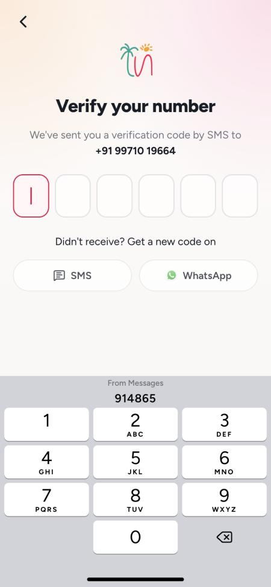
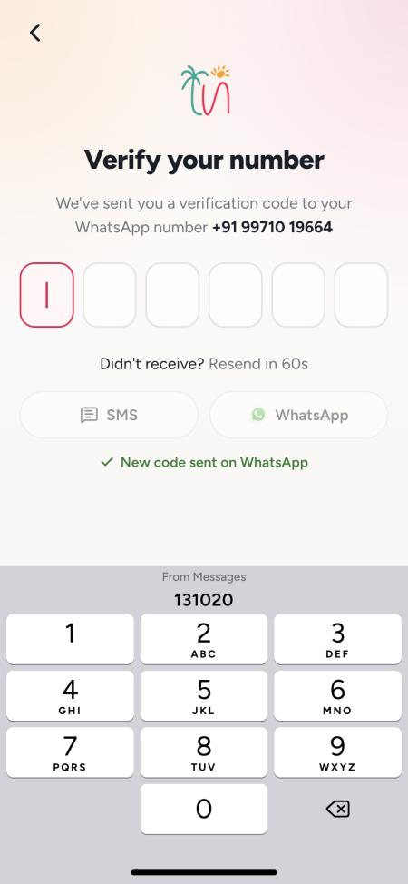
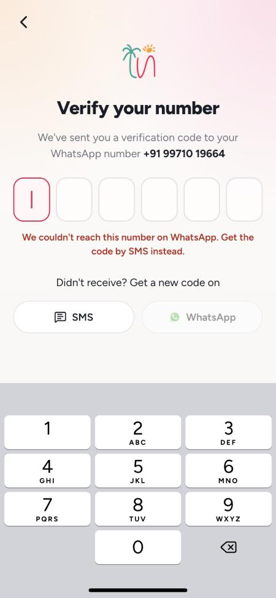
The boxes turn red with a small shake and the message reads That code isn't right. Check it and try again. The boxes clear, the keyboard stays up and the cursor goes back to the first box. Typing again takes the red away.
Too many wrong tries. Get a new code to try again. The keyboard goes down, the boxes lock, and both SMS and WhatsApp wake at once, whatever the countdown says. A new code resets the tries.
Older than 10 minutes: This code has expired. Get a new one. Both ways wake at once.
On send or verify: No internet. Check your connection and try again. The number and the digits stay as they were.
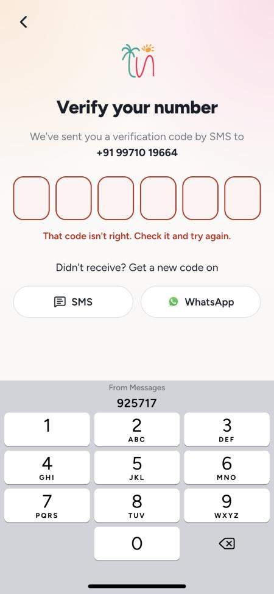
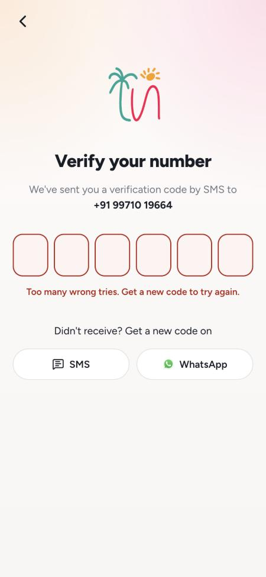
| Where | Text |
|---|---|
| Number screen buttons | Send OTP · Get OTP on WhatsApp |
| Under the buttons | We'll send a 6-digit code by SMS |
| Sending | Sending OTP... · Sending on WhatsApp... |
| Code screen, by SMS | We've sent you a verification code by SMS to +91 99710 19664 |
| Code screen, on WhatsApp | We've sent you a verification code to your WhatsApp number +91 99710 19664 |
| Countdown, then over | Didn't receive? Resend in 45s · Didn't receive? Get a new code on |
| After a resend | New code sent by SMS · New code sent on WhatsApp |
| Wrong code | That code isn't right. Check it and try again. |
| Five wrong tries | Too many wrong tries. Get a new code to try again. |
| WhatsApp failed | We couldn't reach this number on WhatsApp. Get the code by SMS instead. |
| Code limit | Too many codes asked for. Try again in 10 minutes. |
| The SMS | 482913 is your 30 Sundays verification code. It is valid for 10 minutes. Do not share it with anyone. (plus the app's code for Android autofill on the last line) |
| The WhatsApp message | 482913 is your verification code. For your security, do not share this code. [Copy code] |
Codes in the prototype are random and any code it sent works. Expired code and no internet are written here but not built into the prototype.